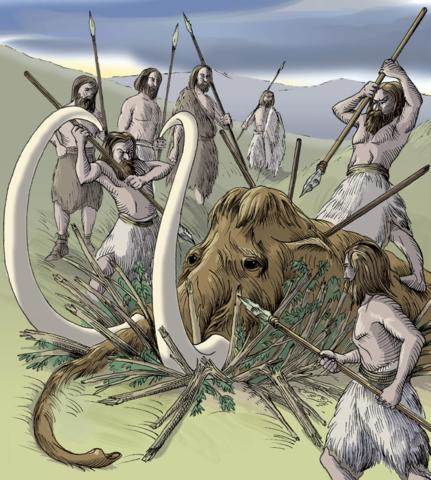
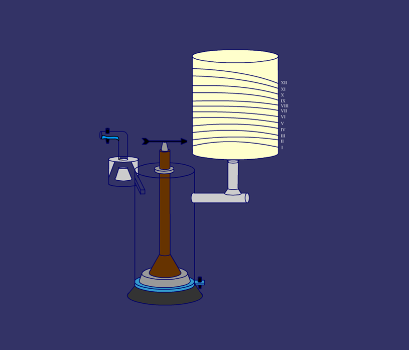
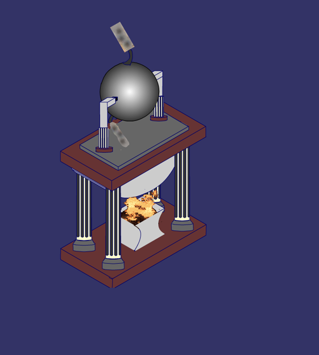
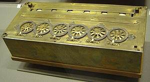
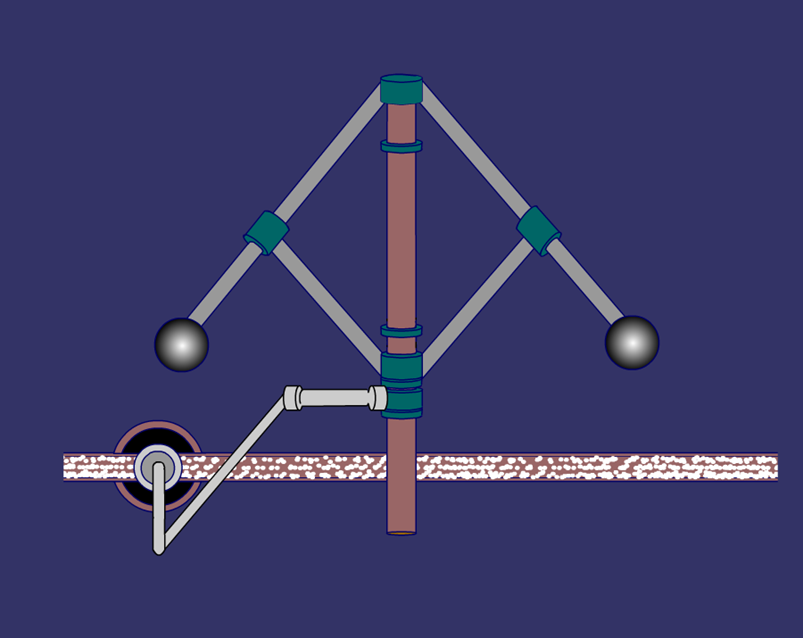
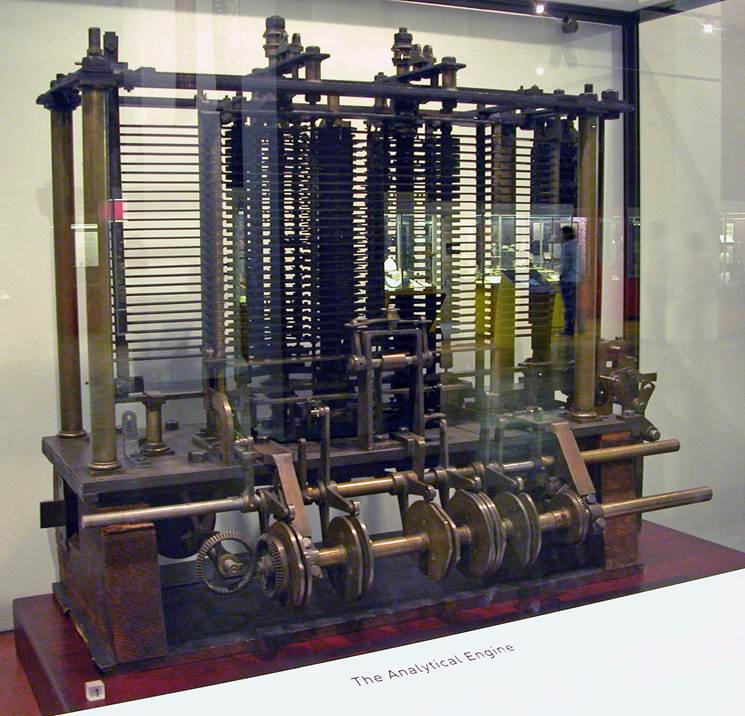
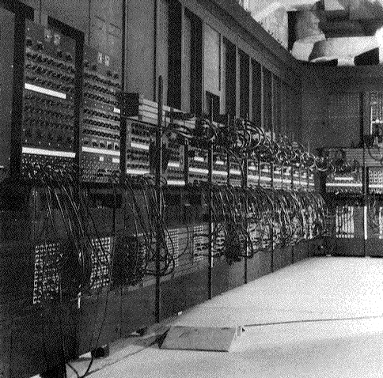
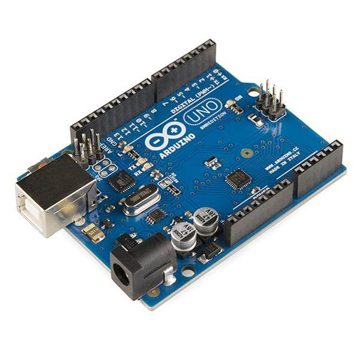

1. Historia de la automática
Desde el comienzo de los tiempos, el hombre ha investigado la manera de hacer su trabajo con el menor esfuerzo posible, lo que le ha llevado a inventar y construir máquinas que resuelvan las tareas con menos operarios y menor esfuerzo físico.
Ya en la Edad de Piedra se diseñan los primeros dispositivos de la automatización, consistentes en trampas para cazar animales.

En el año 378 a.C., Platón construye un reloj despertador y lo instala en el olivar de su academia, para despertar a sus discípulos.
En el siglo III a.C., Ktesibios inventa otra clepsidra o reloj de agua. También en este siglo, Filón de Bizancio construye un sistema automático de regulación del nivel de aceite de una lámpara.
Hacia mediados del siglo I d.C., Herón de Alejandría diseña diversos dispositivos automáticos: un dispensador de vino, un odómetro (para medir la distancia recorrida por un objeto) o un mecanismo automático para abrir las puertas de un templo. También construye la eolipila, prototipo de máquina de vapor.

En el 830 Teófilo de Bizancio construye el primer autómata: un objeto que se mueve por sí mismo.
En 1240 Willard de Honnecourt recoge en su libro Gremio de constructores el diseño de un águila artificial capaz de mover las alas y el pico.
En 1352 se construye el Gallo de Estrasburgo, un autómata que funciona hasta 1752, y que se conserva aún como parte de la catedral de esta ciudad.
En 1642 Blaise Pascal inventa la primera máquina calculadora.
En 1737 Vaucanson realiza “El flautista travesero”, el primer automatismo de la Historia programado con tarjetas perforadas, y que era capaz de interpretar hasta 12 melodías diferentes. Al año siguiente, crea otro autómata: “El pato”. En 1845, Vaucanson aplica la tarjeta perforada para dirigir telares, creando el primer telar automático.
En 1767 el inglés Richard Arkwright patenta la hiladora continua.
En 1785 el molinero Oliver Evans diseña y construye un molino harinero automático en la ciudad estadounidense de Delaware. Montacargas y cintas transportadoras subían el trigo a la parte superior del molino y después facilitaban el trabajo de tamizar y meter la harina en sacos. Con sólo dos molineros se controlaba todo el proceso de obtención y envasado de la harina.
En 1789 James Watt patenta el regulador centrífugo, un dispositivo que permitía controlar la velocidad de la máquina de vapor, mejorando su seguridad. Es el primer ejemplo de realimentación.
En 1801 Joseph Marie Jacquard inventó un telar automático que utilizaba tarjetas perforadas.
En 1808 los ingenieros ingleses Maudslay y Brunel fabricaron en serie 130.000 poleas con una máquina construida por ellos. Con ella sólo eran necesarios 10 operarios sin cualificar, frente a los 110 que hubieran necesitado antes.
En 1835, Charles Babbage presenta su máquina analítica, que viene a ser la precursora del ordenador. En 1842, Ada Lovelace escribe el primer algoritmo para la máquina que, no obstante, nunca se construyó por los problemas de resistencia de los materiales de la época.
En 1870, Christopher Spencer inventa el primer torno completamente automático.
En 1890 Hermann Hollerith elabora el censo de los Estados Unidos (63 millones de habitantes) en 2 años y medio, gracias a un sistema de recogida de datos con tarjetas perforadas. Este procedimiento se emplearía para introducir la información en los primeros ordenadores. Más adelante, Hollerith fundaría la empresa International Business Machines (IBM).
En 1908, la instalación de cadenas de montaje supone un paso de gran importancia en la automatización de los procesos industriales. El primero en adoptarlas fue el fabricante de coches norteamericano Henry Ford, que las empleó en la fabricación del modelo Ford T. Una cinta transportadora movía los vehículos ante los operarios, que añadían una pieza cuando pasaban ante ellos. La producción en cadenas de montaje y la normalización de las piezas favorecieron el abaratamiento de los coches.
En 1914, el ingeniero español Leonardo Torres Quevedo presenta “El ajedrecista”, un autómata que jugaba un final de rey y torre contra el rey contrario. Muchos lo consideran el primer juego por computadora de la Historia. También en este año, el norteamericano Alfred Benesch pone a punto un sistema de automatización específico para los semáforos eléctricos, en Cleveland, Ohio (EE.UU.).
Lawrence Sperry inventa, también en 1914, el piloto automático, el cual mantiene el rumbo corrigiendo cualquier desviación que altere el curso del vuelo de un avión.
En 1920, el escritor checoslovaco Karel Capek emplea, por primera vez, la palabra robot en una obra de teatro, para designar un androide que realizaba funciones propias de un ser humano.
En 1944 el norteamericano Howard Aiken construye el Mark I, un ordenador de 8 toneladas de peso, más de
Entre 1945 y 1948 John Parsons comienza sus investigaciones sobre control numérico.
En 1946 aparece la versión definitiva del ENIAC (Electronic Numerical Integrator And Calculator), primer ordenador electrónico. Consumía 175.000 W de potencia (aproximadamente, lo que 220 braseros conectados simultáneamente).
En 1948 Walter Brattain y John Bardeen, de los Laboratorios Bell, en Estados Unidos, inventan el transistor. Es el gran avance que lleva al mundo actual.
En 1958, Jack Saint Clair Kilby inventa el microchip, que permite integrar varios transistores en un único montaje, con la consecuente evolución.
En 1971, la empresa Intel lanza el primer microprocesador, el 4004.
En 1977 Apple lanza al mercado el Apple II, el que podemos considerar el primer ordenador personal (PC) de la Historia.
En 1990 comienzan a montarse las fábricas totalmente automatizadas.
En el año 2005, los ingenieros Massimo Banzi, Hernando Barragán y David Cuartielles inventan la plataforma Arduino.
Finalmente, en el año 2016, se presenta la IceZum Alhambra, una FPGA (Field Programmable Gate Array) que puede programarse con IceStudio, una herramienta gráfica que nos permite múltiples posibilidades.